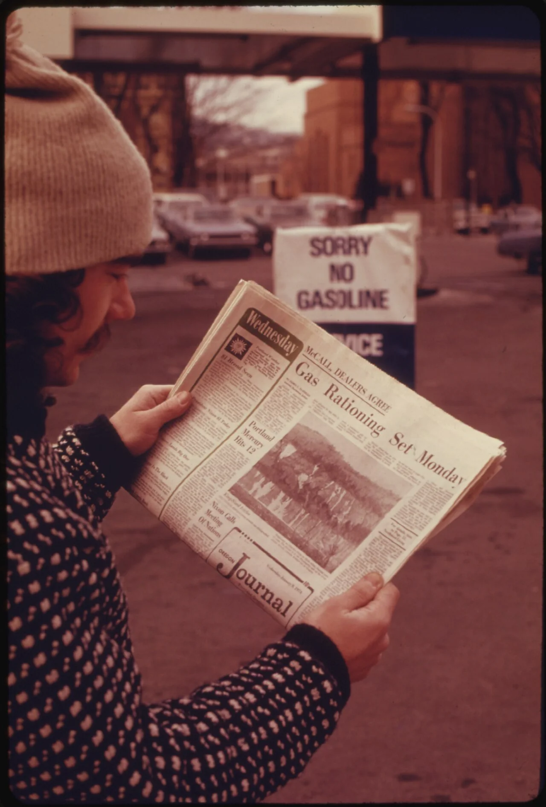
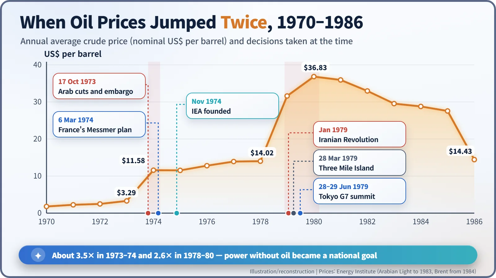
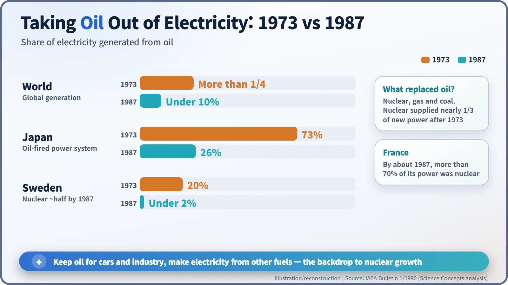

Nuclear History · 246
The Day Oil Quadrupled — How the Oil Shocks Redrew the Map of Nuclear Power (1973–1979)
The posted price of crude nearly quadrupled in two months; France, Japan and others answered with nuclear plants, the United States with orders that peaked and then collapsed.
In October 1973 Arab oil producers cut output and imposed an embargo, and within little more than two months the posted price of crude nearly quadrupled. Countries short of energy turned to nuclear power to take oil out of electricity, while in the United States reactor orders actually fell. A second shock in 1979 arrived in the same year as the Three Mile Island accident, setting energy security and safety concerns against each other.
The Sundays the autobahns fell silent
On Sunday 25 November 1973, West Germany's autobahns fell silent. Six days earlier the government had issued a regulation banning private cars from the roads on four consecutive Sundays: 25 November and 2, 9 and 16 December. In the land of the automobile, the cars stayed parked because of decisions taken thousands of kilometres away in the Middle East. Those strange, empty Sundays were a sign of something bigger: within a few years, the way much of the world made its electricity would change. [7]
Prosperity built on cheap oil
The post-war boom in Western Europe, North America and Japan ran on cheap Middle Eastern oil. Oil did not just fuel cars and factories; it also made electricity. In 1973 more than a quarter of the world's electricity came from burning oil, and in Japan the figure was a remarkable 73 per cent. A barrel of crude cost a little over three dollars. [4]
October 1973: the valves close
On 6 October 1973 Egypt and Syria attacked Israel, starting the Yom Kippur War. On 16 October the Gulf producers raised the posted price of crude from just over three dollars a barrel to just over five (sources disagree on the exact figures). The next day, 17 October, meeting in Kuwait, the Arab oil producers announced that they would cut output by 5 per cent a month and threatened an embargo on Israel's supporters. Saudi Arabia's King Faisal (1906–1975) joined in, and the United States and the Netherlands were placed under embargo.
In December an OPEC meeting in Tehran set the posted price at $11.65 from 1 January 1974. In little more than two months the price had nearly quadrupled. The US State Department's historians put it simply: the price "first doubled, then quadrupled". [1] [6]

Project Independence
As "no gas" signs went up at American filling stations, President Richard Nixon (1913–1994) addressed the nation on 7 November 1973 and proposed "Project Independence". The aim was that "by the end of this decade" the country could meet its "own energy needs without depending on any foreign energy sources". Nuclear power was part of the plan: "Fifth, I am asking the Atomic Energy Commission to speed up the licensing and construction of nuclear plants." He wanted to cut the time it took to bring nuclear plants on line "from 10 years to 6 years". [2]
The embargo was lifted in mid-March 1974, but prices never went back down. [1]
Same shock, different answers
Cars and aircraft could not easily switch fuels, but power stations could run on coal, natural gas or uranium. So governments set themselves a new rule of thumb: whatever happens to oil, make electricity without it.
Countries with few energy resources of their own bet heavily on nuclear power. France announced a large-scale nuclear construction programme on 6 March 1974. In June 1974 Japan passed its "three power-source laws", which paid grants to communities that hosted power stations, above all nuclear plants. Consumer countries also founded the International Energy Agency (IEA) in November 1974.

So why did the United States go the other way?
It is tempting to assume the oil crisis set off a worldwide nuclear boom. In the United States it did not. New reactor orders peaked at 41 in 1973, then fell, by contemporary press accounts, to two in 1978 and none in 1979. Expensive oil taught people to save electricity, so demand grew more slowly than utilities had planned. High interest rates and inflation pushed up construction costs and stretched building times. Even reactors already ordered were cancelled one after another. The crisis gave nuclear power a strong argument, but it could not make the numbers add up on its own.
1979: a second shock and two arguments
In January 1979 the Iranian Revolution forced the Shah to leave the country, and the oil market lurched again. The average crude price jumped from $14.02 a barrel in 1978 to $36.83 in 1980. In the middle of it all, on 28 March 1979, came the accident at Three Mile Island in Pennsylvania. In a single year, the energy-security case for leaving oil behind collided head-on with fresh doubts about whether nuclear plants were safe enough. [5]
At the end of June the G7 leaders met in Tokyo under the chairmanship of Japan's Prime Minister Masayoshi Ōhira (1910–1980). They agreed ceilings on oil imports, and their declaration stated: "Without the expansion of nuclear power generating capacity in the coming decades, economic growth and higher employment will be hard to achieve. This must be done under conditions guaranteeing our people's safety." [3]
Fifteen years of taking oil out of electricity
An analysis published in the IAEA Bulletin in 1990 tracked what happened next. By 1987 oil generated less than 10 per cent of the world's electricity. Japan's share had fallen from 73 to 26 per cent, and Sweden's from 20 per cent to under 2. The analysts estimated that nuclear power had supplied nearly one-third of all the new electricity generated worldwide since 1973, and that France was producing more than 70 per cent of its power from nuclear plants. [4]

The expansion of nuclear power was never just a story about reactor technology. Like those empty autobahns, it was shaped by geopolitics: by who controlled the world's energy. At the same time, opposition to nuclear power was growing, and the long tug-of-war between energy security, safety and local consent was under way.